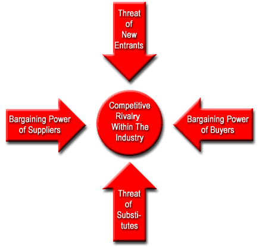

Why is this important? Each industry is different, and using one cookie-cutter approach to analysis is sure to create problems. Imagine, for example, comparing the P/E ratio of a tech company to that of a utility. Because you are, in effect, comparing apples to oranges, the analysis is next to useless.
In each section we'll take an in-depth look at the different valuation techniques and buzz words used in a particular industry, complete a 5-forces analysis on the state of the market and point you in the direction of industry-specific resources.
If you are not familiar with the five competitive forces model, here is a brief background on who developed it, and why it is useful.
The model originated from Michael E. Porter's 1980 book "Competitive Strategy: Techniques for Analyzing Industries and Competitors." Since then, it has become a frequently used tool for analyzing a company's industry structure and its corporate strategy.
In his book, Porter identified five competitive forces that shape every single industry and market. These forces help us to analyze everything from the intensity of competition to the profitability and attractiveness of an industry. Figure 1 shows the relationship between the different competitive forces.
|  |
| Figure 1: Porter\'s five competitive forces |
| Figure 1: Porter\'s five competitive forces |
|
|
|
|
Few inventions have changed how people live and experience the world as much as the invention of the airplane. During both World Wars, government subsidies and demands for new airplanes vastly improved techniques for their design and construction. Following the World War II, the first commercial airplane routes were set up in Europe. Over time, air travel has become so commonplace that it would be hard to imagine life without it. The airline industry, therefore, certainly has progressed. It has also altered the way in which people live and conduct business by shortening travel time and altering our concept of distance, making it possible for us to visit and conduct business in places once considered remote. (For more on the airline industry, read Is That Airline Ready For Lift-Off?)
The airline industry exists in an intensely competitive market. In recent years, there has been an industry-wide shakedown, which will have far-reaching effects on the industry's trend towards expanding domestic and international services. In the past, the airline industry was at least partly government owned. This is still true in many countries, but in the U.S. all major airlines have come to be privately held.
The airline industry can be separated into four categories by the U.S. Department of Transportation (DOT):
Key Ratios/Terms
Available Seat Mile = (total # of seats available for transporting passengers) X (# of miles flown during period)
Revenue Passenger Mile = (# of revenue-paying passengers) X (# of mile flown during the period)
Revenue Per Available Seat Mile = (Revenue)
(# of seats available)
Air Traffic Liability (ATL): An estimate of the amount of money already received for passenger ticket sales and cargo transportation that is yet to be provided. It is important to find out this figure so you can remove it from quoted revenue figures (unless they specifically state that ATL was excluded).
Load Factor: This indicator, compiled monthly by the Air Transport Association (ATA), measures the percentage of available seating capacity that is filled with passengers. Analysts state that once the airline load factor exceeds its break-even point, then more and more revenue will trickle down to the bottom line. Keep in mind that during holidays and summer vacations load factor can be significantly higher, therefore, it is important to compare the figures against the same period from the previous year.
Analyst Insight
Airlines also earn revenue from transporting cargo, selling frequent flier miles to other companies and up-selling in flight services. But the largest proportion of revenue is derived from regular and business passengers. For this reason, it is important that you take consumer and business confidence into account on top of the regular factors that one should consider like earnings growth and debt load. (For more about the consumer confidence survey, see Economic Indicators: Consumer Confidence Index.)
Business travelers are important to airlines because they are more likely to travel several times throughout the year and they tend to purchase the upgraded services that have higher margins for the airline. On the other hand, leisure travelers are less likely to purchase these premium services and are typically very price sensitive. In times of economic uncertainty or sharp decline in consumer confidence, you can expect the number of leisure travelers to decline.
It is also important to look at the geographic areas that an airline targets. Obviously, more market share is better for a particular market, but it is also important to stay diversified. Try to find out the destination to which the majority of an airline's flights are traveling. For example, an airline that sends a high number of flights to the Caribbean might see a dramatic drop in profits if the outlook for leisure travelers looks poor.
A final key area to keep a close eye on is costs. The airline industry is extremely sensitive to costs such as fuel, labor and borrowing costs. If you notice a trend of rising fuel costs, you should factor that into your analysis of a company. Fuel prices tend to fluctuate on a monthly basis, so paying close attention to these costs is crucial.
Porter's 5 Forces Analysis
Key Links
There is no doubt that the oil/energy industry is extremely large. According to the Department of Energy (DOE), fossil fuels (including coal, oil and natural gas) makes up more than 85% of the energy consumed in the U.S. as of 2008. Oil supplies 40% of U.S. energy needs. (Visit the U.S. Department of Energy's Energy Sources information page for more insight.)
Before petroleum can be used, it is sent to a refinery where it is physically, thermally and chemically separated into fractions and then converted into finished products. About 90% of these products are fuels such as gasoline, aviation fuels, distillate and residual oil, liquefied petroleum gas (LPG), coke (not the refreshment) and kerosene. Refineries also produce non-fuel products, including petrochemicals, asphalt, road oil, lubricants, solvents and wax. Petrochemicals (ethylene, propylene, benzene and others) are shipped to chemical plants, where they are used to manufacture chemicals and plastics. (For more insight, read Oil And Gas Industry Primer.)
There are two major sectors within the oil industry, upstream and downstream. For the purposes of this tutorial we will focus on upstream, which is the process of extracting the oil and refining it. Downstream is the commercial side of the business, such as gas stations or the delivery of oil for heat.
Oil Drilling and Services
Oil drilling and services is broken into two major areas: drilling and oilfield services.
In the drilling industry, there are several different types of rigs, each with a specialized purpose. Some of these include:
(For more information on the drilling industry, check out on the Rigzone website.)
The energy industry is not any different than most commodity-based industries as it faces long periods of boom and bust. Drilling and other service firms are highly dependent on the price and demand for petroleum. These firms are some of the first to feel the effects of increased or decreased spending. If oil prices rise, it takes time for petroleum companies to size up land, setup rigs, take out the oil, transport it and refine it before the oil company sees any profit. On the other hand, oil services and drilling companies are the first on the scene when companies decide to start exploring.
Oil Refining
The refining business is not quite as fragmented as the drilling and services industry. This sector is dominated by a small handful of large players. In fact, much of the energy industry is ruled by large, integrated oil companies. Integrated refers to the fact that many of these companies look after all factors of production, refining and marketing.
For the most part, refining is a slow and stable business. The large amounts of capital investment means that very few companies can afford to enter this business. This handbook will try to focus more on oil equipment and services such as drilling and support services.
Key Ratios/Terms
BTUs: Short for "British Thermal Units." This is the amount of heat required to increase the temperature of one pound of water by one degree Fahrenheit. Different fuels have different heating values; by quoting the price per BTU it is easier to compare different types of energy.
Dayrates: Oil and gas drillers usually charge oil producers on a daily work rate. These rates vary depending on the location, the type of rig and the market conditions. There are plenty of research firms that publish this information. Higher dayrates are great for drilling companies, but for refiners and distribution companies this means lower margins unless energy prices are rising at the same rate.
Meterage: Another type of contract that differs from dayrates is one based on how deep the rig drills. These are called meterage, or footage, contracts. These are less desirable because the depth of the oil deposits are unpredictable; it's really a gamble on the driller's part.
Downstream: Refers to oil and gas operations after the production phase and through to the point of sale, whether at the gas pump or the home heating oil truck
Upstream: The grass roots of the oil business, upstream refers to the exploration and production of oil and gas. Many analysts look at upstream expenditures from previous quarters to estimate future industry trends. For example, a decline in upstream expenditures usually trickles down to other areas such as transportation and marketing.
OPEC: The Organization of Petroleum Exporting Countries is an intergovernmental organization dedicated to the stability and prosperity of the petroleum market. OPEC membership is open to any country that is a substantial exporter of oil and that shares the ideals of the organization. OPEC has 11 member countries. Output quotas placed by OPEC can send huge shocks throughout the energy markets.
Below is a chart of the world's top exporters of petroleum. OPEC members are denoted by "*". Indonesia and Qatar are also members, but they don't make the top twelve.
| | ||
| Country | Net Exports (million barrels per day) | |
| 1) | Saudi Arabia* | |
| 2) | Russia | |
| 3) | Norway | |
| 4) | Iran* | |
| 5) | United Arab Emirates* | |
| 6) | Venezuela* | |
| 7) | Kuwait* | |
| 8) | Nigeria* | |
| 9) | Algeria* | |
| 10) | Mexico | |
| 11) | Libya* | |
| 12) | Iraq* | |
| Source: Energy Information Administration |
Analyst Insight
Analysts and investors often disagree on specific investment decisions, but one thing that they do agree on is their approach to analyzing energy companies. A top down investment approach is almost always the best strategy. We will go through the top down steps below. (For more insight, read A Top-Down Approach To Investing.)
Economics/Politics
The oil industry is easily influenced by economic and political conditions. If a country is in a recession, fewer products are being manufactured, not as many people drive to work, take vacations, etc. All of these variables factor into less energy use. The best time to invest in an oil company is when the economy is firing on all cylinders and oil companies are making so much money that using excessive amounts of energy themselves has little effect on their bottom line.
Some analysts believe that rather than analyzing energy companies, you should just predict the trend in energy prices. While more analysis is needed for a prudent investment than simply looking at price trends in oil, it's true that there is a strong correlation between the performance of energy companies and the commodity price for energy.
Supply and Demand
Oil and gas prices fluctuate on a minute by minute basis, taking a look at the historical price range is the first place you should look. Many factors determine the price of oil, but it really all comes down to supply and demand. Demand typically does not fluctuate too much (except in the case of recession), but supply shocks can occur for a number of reasons. When OPEC meets to determine oil supply for the coming months, the price of oil can fluctuate wildly. Day-to-day fluctuations should not influence your investment decision in a particular energy company, but long-term trends should be followed more closely. You can find the latest energy supply/demand statistics at the Energy Information Administration.
Rig Utilization Rates
Another factor that determines supply is the rig utilization rates; its close relationship to oil prices is not a coincidence. Higher utilization rates mean more revenue and profits. For drilling companies, it is important to take a close look at the company's rig fleet, because older rigs lack the ability to drill in remote locations or to bore deep holes. Some other factors to consider are the depth of water that the offshore rigs can drill in, hole depth and horsepower. Higher quality rigs will have higher utilization rates, especially during weak periods. This will lead to higher revenue growth. Sometimes this is a double-edged sword; while higher utilization is better, a company that is at its capacity will have difficulty increasing revenues further.
Contracts
The contracts through which an oil services company is paid also play a large role in supply. Pay close attention to the dayrates, as falling dayrates can dramatically decrease revenues. The opposite is true should dayrates rise. This is because many of the drillers' costs are fixed.
Financial Statements
After these wide scale factors have been considered, it's time to get down to the nitty gritty - the financials. And when it comes to the financials, the same old rules apply to oil services companies. Ideally, revenues and profits will be growing consistently, just as they do in any quality company. It's worth digging deeper to see if there are any one-time events that have dramatically increased revenues. Also, the P/E ratio and PEG ratios should be comparable to others within the industry.
On the balance sheet, investors should keep an eye on debt levels. High debt puts a strain on credit ratings, weakening their ability to purchase new equipment or finance other capital expenditures. Poor credit ratings also make it difficult to acquire new business. If customers have the choice of going with a company that is strong versus one that is having debt problems, which do you think they will choose? To do a test for financial leverage, take a look at the debt/equity ratio. The working capital also tells us whether the company has enough liquid assets to cover short term liabilities. Rating agencies like Moody's and S&P say 50% is a prudent debt/equity ratio. Companies in more stable markets can afford slightly higher debt/equity ratios.
If profits are of the utmost importance, then the statement of cash flow is a close second. Oil companies are notorious for reporting non cash line items in the income statement. For this reason, you should try to decipher the cash EPS. By stripping away all the non-cash entities you will get a truer number because cash flow cannot be manipulated as easily as net income can. (For further reading, see Advanced Financial Statement Analysis.)
Porter's 5 Forces Analysis
Key Links
The precious metals industry is very capital intensive. Constructing mines and building production facilities requires huge sums of capital. Long-term survival requires heavy expenditures to finance production and exploration. Technology has played a big role in the computer and internet industry, but it has also greatly changed the mining industry. Gold is the most popular precious metal for investors. As you may know, gold is a commodity, and, as such, the price for gold fluctuates on a daily basis in the commodity markets.
While there is a lot of overlap between the basics of mining gold and silver, the primary focus of here is on the gold market. Silver is less valuable than gold, and, as such, it is usually discovered either by accident or as a byproduct of gold/lead/copper mining.
Gold prices are influenced by numerous variables that include fabricator demand, expected inflation, return on assets and central bank demand. Gold is strongly pegged to supply-and-demand patterns. In general, low prices result in low production, and high prices result in high production. Market forces determine price. A company's attempt to control costs is critical to maintaining financial health and production levels in the face of declining gold prices. (For related reading, see Does It Still Pay To Invest In Gold?)
The metals industry is not vertically integrated like other industries such as oil and energy. In the metals industry, the companies that mine the gold typically do not refine it, and refiners rarely sell it directly to the public. The industry encompasses three types of firms:
|
Each operator in the supply chain has its own strengths and weaknesses. Some companies do well at extracting the metal from the earth, some refine, while others smelt and transform the commodity into a finished product.
Most gold that is mined today is used for jewelry, perhaps because of its beauty, or perhaps because it doesn't rust or corrode. Other uses for gold include tooth filings, electronics manufacturing and collectibles, but these make up a very small portion of overall demand.
Unlike other industries, companies in the mining industry come in all shapes and sizes. Much of the production is done by large blue chip companies, but the exploration side of the industry is full of junior companies looking to hit a home run with a large gold find. The mining industry has plenty of opportunities for speculators and others for income investors. (To learn more, read Getting Into The Gold Market.)
Key Ratios/Terms
Mine Production Rates: Serious gold investors follow the Gold Survey very closely, published by Gold Fields Mineral Services. Each year, it lists the worldwide mine production statistics. Increasing production rates means more supply, which ultimately means a lower price for gold - if demand remains stable.
Scrap Recovery: Another statistic published in the Gold Survey, scrap recovery refers to the worldwide supply of gold from sources other than mine production. This includes recovered old jewelry, industrial byproducts, etc. Throughout the 1990s, more than 15% of the world's gold supply came from scrap recovery.
Futures Sales by Producers As you probably know, gold trades in the futures markets. Gold producers are constantly monitoring the prices in the futures markets because it determines the price at which they can sell their gold. The Gold Survey lists statistics on producer sales. If producers are selling an increasing amount in the futures market, it could mean that prices will fall very soon. By purchasing futures contracts the producer "locks-in" a price. Therefore, if the price of gold falls in future months, it won't affect the producer's bottom line. Conversely, if prices continue to rise after the producer locks in, they won't be able to capitalize on the higher prices.
Bullion: This denotes gold and silver that is refined and officially recognized as high quality (at least 99.5% pure). It is usually in the form of bars rather than coins. When you hear of investors or central banks holding gold reserves, it is usually in the form of bullion.
Ore: This refers to mineralized rock that contains metal. Gold producers mine gold ore and then extract the gold from it using either chemicals, extreme heat, or some other method. There are different types of ores, of which the most common are oxide ores and sulphide ores.
Analyst Insight
The price of gold fluctuates on a minute-by-minute basis, so taking a look at the historical price range is the first place you should look. Many factors determine the price of gold, but it really all comes down to supply and demand. Demand typically does not fluctuate too much, but supply shocks can send prices either soaring or into the doldrums.
The difference between production costs and the futures price for gold equals the gross profit margins for mining companies. Therefore, the second place you want to look is the cost of production. The main factors to look at are the following:
|
Cost of Production
The cost of production is probably the most widely followed measure for analyzing a gold producer. The lower the costs, the greater the operating leverage, which means that earnings are more stable and less volatile to changes in the price of gold. For example, a company that has a cash cost around $175/ounce is, for obvious reasons, in a much better position than one whose cost is $275/ounce. The low-cost producer has much more staying power than the marginal producer. In fact, if the price of gold declines below $275/ounce, the higher-cost producer would have to stop producing until the price goes back up. Producers usually publish their cost of production in their annual report; this cost includes everything from site preparation to milling and refining. It doesn't include exploration costs, financing, or any other administrative expenses the company might incur.
Aside from looking at costs, investors should carefully look over revenue growth. Revenue is output times the selling price for gold, so it may fluctuate from year to year. Well-run companies will attempt to hedge against fluctuating gold prices through the futures markets. Take a look at the revenue fluctuations over the past several years. Ideally, the revenue growth should be smooth. Companies with revenues that fluctuate widely from year to year are very hard to analyze and aren't where the smart money goes.
Debt Levels
Investors should keep an eye on debt levels, which are on the balance sheet. High debt puts a strain on credit ratings, weakening the company's ability to purchase new equipment or finance other capital expenditures. Poor credit ratings also make it difficult to acquire new businesses. (For related reading, see Debt Reckoning.)
P/E
As a final caveat (beware), never analyze a precious-metals company based on the price-to-earnings ratio. In general, a high P/E means high projected earnings in the future, but all gold stocks have high P/E ratios. The P/E ratio for a gold stock doesn't really tell us anything because precious metals companies need to be compared by assets, not earnings. Unlike buildings and machinery, gold companies have large amounts of gold in their vaults and in mines throughout the world. Gold on the balance sheet is unlike other capital assets; gold is seen as currency of last resort. Investors are therefore willing to pay more for a gold company because it is the next best thing to physically holding the gold themselves.
There are a few valuation techniques that analysts use when comparing various precious metal companies. The most popular and widely used ratio is market capitalization per ounce of reserves (market cap divided by reserves). This indicates to investors what they are paying for each ounce of reserves. Obviously, a lower price is better.
Porter's 5 Forces Analysis
Key Links
Similar to the invention of the airplane, the emergence of automobiles has had a profound effect on our everyday lives.
The auto manufacturing industry is considered to be highly capital and labor intensive. The major osts for producing and selling automobiles include:
Over and above the labor and material costs we mentioned above, there are other developments in the automobile industry that you must consider when analyzing an automobile company. Globalization, the tendency of world investment and businesses to move from national and domestic markets to a worldwide environment, is a huge factor affecting the auto market. More than ever, it is becoming easier for foreign automakers to enter the North American market. (To read more about this issue, see The Globalization Debate.)
Competition is the other factor that takes its toll on the auto industry; we will discuss this in more detail below under the Porter's 5 forces analysis
Key Players
In North America, the automobile production market is dominated by what's known as the Big Three:
Fleet Sales:
Traditionally, these are high-volume sales designated to come from large companies and government agencies. These sales are almost always at discount prices. In the past several years, auto makers have been extending fleet sales to small businesses and other associations.Seasonally Adjusted Annual Rate of Sales (SAAR): Most auto makers experience increased sales during the second quarter (April to June), and sales tend to be sluggish between November and January. For this reason, it is important to compare sales figures to the same period of the previous year. The adjustment factors are released each year by the U.S. Bureau of Economic Analysis.
Sales Reports: Many of the large auto makers release their preliminary sales figures from the previous month on a monthly basis. This can give you an indication of the current trends in the industry.
Day Sales Inventory = Average Inventory
Average Daily Sales
The sales reports (discussed above) are released monthly. Most automakers try to make dealerships hold 60 days worth of inventory on their lots. Watch out if sales inventory climbs significantly above 60 days worth. Sales fluctuate month-to-month, but you shouldn't see sustained periods of high inventory.
Analyst Insight
Automobiles depend heavily on consumer trends and tastes. While car companies do sell a large proportion of vehicles to businesses and car rental companies (fleet sales), consumer sales is the largest source of revenue. For this reason, taking consumer and business confidence into account should be a higher priority than considering the regular factors like earnings growth and debt load. (For more about the Consumer Confidence Survey, see Economic Indicators: Consumer Confidence Index.)
Another caveat of analyzing an automaker is taking a look at whether a company is planning makeovers or complete redesigns. Every year, car companies update their cars. This is a part of normal operations, but there can be a problem when a company decides to significantly change the design of a car. These changes can cause massive delays and glitches, which result in increased costs and slower revenue growth. While a new design may pay off significantly in the long run, it's always a risky proposition.
For parts suppliers, the life span of an automobile is very important. The longer a car stays operational, the greater the need for replacement parts. On the other hand, new parts are lasting longer, which is great for consumers, but is not such good news for parts makers. When, for example, most car makers moved from using rolled steel to stainless steel, the change extended the life of parts by several years.
A significant portion of an automaker's revenue comes from the services it offers with the new vehicle. Offering lower financial rates than financial institutions, the car company makes a profit on financing. Extended warranties also factor into the bottom line. (To read more about this, see Extended Warranties: Should You Take The Bait?)
Greater emphasis on leasing has also helped increase revenues. The advantage of leasing is that it eases consumer fears about resale value, and it makes the car sound more affordable. From a maker's perspective, leasing is a great way to hide the true price of the vehicle through financing costs. Car companies, then, are able to push more cars through. Unfortunately, profiting on leasing is not as easy as it sounds. Leasing requires the automakers to accurately judge the value of their vehicles at the end of the lease, otherwise they may actually lose money. If you think about it, the automaker will lose money on the lease if they give the car a high salvage value. A car with a low salvage value at the end of the lease will simply be bought by the consumer and flipped for a profit.
Porter's 5 Forces Analysis
Key Links
All businesses that sell goods and services to consumers fall under the umbrella of retailing, but there are several directions we can take from here. For starters, there are department stores, discount stores, specialty stores and even seasonal retailers. Each of these might have their own little quirks; however, for the most part the analysis overlaps to all areas of retailing. This section of the industry handbook will try to focus more on general retailers and department stores. (For background reading, see Analyzing Retail Stocks.)
Over the past couple decades, there have been sweeping changes in the general retailing business. What was once strictly a made-to-order market for clothing has changed to a ready-to-wear market. Flipping through a catalog, picking the color, size and type of clothing a person wanted to purchase and then waiting to have it sewn and shipped was standard practice. At the turn of the century some retailers would have a storefront where people could browse. Meanwhile, new pieces were being sewn or customized in the back rooms.
In some parts of the world, the retail business is dominated by smaller family-run or regionally-targeted stores, but this market is increasingly being taken over by billion-dollar multinational conglomerates like Wal-Mart and Sears. The larger retailers have managed to set up huge supply/distribution chains, inventory management systems, financing pacts and wide scale marketing plans.
Without getting into specific product categories within the retailing industry, the overall segments can be divided into two categories:
Each retailer tries to differentiate itself from the competition, but the strategy that the company uses to sell its products is the most important factor. Here are some different types of retailers:
Each of these has its own distinct advantages, but it's important to know how these advantages play out. For example, during tough economic times, the discount retailers tend to outperform the others. The opposite is true when the economy is thriving. The more successful retailers attempt to combine the characteristics of more than one type of retailer to differentiate themselves from the competition.
Key Ratios/Terms
Same Store Sales: Used when analyzing individual retailers. It compares sales in stores that have been open for a year or more. This allows investors to compare what proportion of new sales have come from sales growth compared to the opening of new stores. This is important because although new stores are good, there eventually comes a saturation point at which future sales growth comes at the expense of losses at other locations. Same store sales are also commonly referred to as "comps."
Sales per Square Foot: Sales
Square Footage
Store space is considered to be a productive asset and the key to profitability. Successful companies generate as much sales volume as possible out of each square foot of store space. More recently, analysts have created modifications of this concept by looking at a retailers' gross margin per square foot.
Inventory Turnover: This ratio shows how many times the inventory of a firm is sold and replaced over a specific period.
Generally calculated as: Sales
Inventory
But, may also be calculated as: Cost of Goods Sold
Average Inventory
Although the first calculation is more frequently used, COGS may be substituted because sales are recorded at market value while inventories are usually recorded at cost. Also, average inventory may be used instead of the ending inventory to help minimize seasonal factors. This ratio should be compared against similar retail companies or the industry average. A low turnover might imply poor sales and, therefore, excess inventory. A high ratio implies either strong sales or ineffective buying from suppliers. (For related reading, see
Consumer Confidence: The Consumer Confidence Index (CCI) is put out by the Consumer Confidence Board around the middle of each month. The Consumer Confidence Survey is based on a sample of 5,000 U.S. households and is considered to be one of the most accurate indicators of confidence. Increasing confidence means more spending and borrowing for consumers - a positive for retailers. (To learn more about this measure, see Economic Indicators To Know: Consumer Confidence Index.)
Personal Income & Disposable Income: Every quarter, the Bureau of Economic Analysis releases the latest income data for U.S. citizens. There is a high correlation between retail sales data and the changes in personal income. (For more insight, see Economic Indicators: Personal Income and Outlays.)
Analyst Insight
As we mentioned earlier, the store type and the strategy that retailers use plays a big role in how well the company performs. The first thing to take a look at is what segment of the retail industry the company is situated in. Is the company a discounter? Department store? Specialty retailer? The retail category to which the company belongs also helps determine the following details about the company:
The performance of the economy as a whole obviously has a great impact on the retailing industry. Retailer profits have a close correlation with the overall performance of the economy. Looking at the trends for growth in gross domestic product (GDP), inflation, consumer confidence, personal income and interest rates are extremely important when thinking about investing in the retail industry. You might not think that your shopping habits are sensitive to interest rate fluctuations, but they are. While a 50-basis-point drop in interest rates might not give you the sudden inkling to go drop $1,000 at Macy's, for the economy as a whole, it has a big effect on spending patterns. (For more insight on this effect, see How Interest Rates Affect The Stock Market.)
After looking at the macroeconomic factors and the industry as a whole, it is time to delve into the financial statements. The biggest problem for analyzing these companies is the lack of consistency between accounting procedures. It takes a careful eye when comparing performance ratios and figures from one company to the next. For example, some companies tend to include shipping and storage in their cost of goods sold, while others list it as a separate expense. This is why you must read all the notes to the financial statements and gain a better understanding of what is and isn't included in the various figures. (To learn more, read Footnotes: Start Reading The Fine Print.)
Aside from earnings and revenue growth, one important thing to look at is the markup percentage for the retailer. This is also known as the gross profit margin (sales minus cost of goods sold). Unfortunately, there is not one margin that every retailer should use: discount stores generally have lower margins compared to other general merchandisers. When comparing these numbers, higher margins are usually better because it means the company has more room to work with during price wars, intensified competition or when demand slows.
Inventory is also a key figure to pay close attention to as without it, retailers don't have anything to sell. A company's inventory situation depends on what type of products it offers. For example, the inventory turnover for a grocery store (with perishable goods) will be higher than that of a department store. Compare the turnover rates of direct competitors: those with higher rates tend to have fresh new products that sell more frequently. Keep in mind that an increase in inventory is not always a cause for alarm. Sometimes inventory will increase as a result of new stores opening or the expansion of existing stores. Therefore, compare the increase in inventory to the growth of new stores to see if there is more to the story. (For more on inventory evaluation, read Measuring Company Efficiency.)
As one final caveat (beware) when looking at performance data and financial statements for retailers is to compare them against the same period for the previous year. Holiday spending and other seasonal factors can mean wild swings in financial results from one quarter to the next. Compare the Christmas season results for the company over the same season from previous years. There isn't one store out there that doesn't see an increase in sales during the month of December, so don't be fooled by comparisons to preceding months. This is why year-over-year same store sales figures are so widely followed by investors and analysts. When retailers release their same store sales figures on the first or second Thursday of every month, they are usually compared to the same time period from previous years. To take this one step further, compare sales data for more than just one month. Aggressive marketing or discounts can skew data for one particular month; therefore, you need to look at the overall trend in same store sales over several months.
Porter's 5 Forces Analysis
If there is one industry that has the stigma of being old and boring, it would have to be banking; however, a global trend of deregulation has opened up many new businesses to the banks. Coupling that with technological developments like internet banking and ATMs, the banking industry is obviously trying its hardest to shed its lackluster image.
There is no question that bank stocks are among the hardest to analyze. Many banks hold billions of dollars in assets and have several subsidiaries in different industries. A perfect example of what makes analyzing a bank stock so difficult is the length of their financials - they are typically well over 100 pages. While it would take an entire textbook to explain all the ins and outs of the banking industry, here we'll shed some light on the more important areas to look at when analyzing a bank as an investment. (For background reading, see Analyzing A Bank's Financial Statements.)
There are two major types of banks in North America:
Running a bank is just as difficult as analyzing it for investment purposes. A bank's management must look at the following criteria before it decides how many loans to extend, to whom the loans can be given, what rates to set, and so on:
Perhaps the biggest distinction that sets the banking industry apart from others is the government's heavy involvement in it. Besides setting restrictions on borrowing limits and the amount of deposits that a bank must hold in the vault, the government (mainly the Federal Reserve) has a huge influence on a bank's profitability. (To learn more about the Fed, read the Federal Reserve Tutorial.)
Key Ratios/Terms
Interest Rates: In the U.S., the Federal Reserve decides the interest rates. Because interest rates directly affect the credit market (loans), banks constantly try to predict the next interest rate moves, so they can adjust their own rates. A bad prediction on the movement of interest rates can cost millions. (To learn more, read Trying To Predict Interest Rates.)
Gap: This refers to the difference, over time, between the assets and liabilities of a financial institution. A "negative gap" occurs when liabilities are higher than assets. Conversely, when there are more assets than liabilities, there is a positive gap. When interest rates are going up, banks with a positive gap will profit. The opposite is true when interest rates are falling.
Capital Adequacy: A bank's capital, or equity, is the margin by which creditors are covered if the bank has to liquidate assets. A good measure of a bank's health is its capital/asset ratio, which, by law, is required to be above a prescribed minimum.
The following are the current minimum capital adequacy ratios:
The risk weighting is prescribed by the Bank for International Settlements. For example, cash and government securities are said to have zero risk, whereas mortgages have a risk weight of 0.5. Multiplying the assets by their risk weights gives the total risk-weighted assets, which is then used to determine the capital adequacy.
Tier 1 Capital: In relation to the capital adequacy ratio, Tier 1 capital can absorb losses without a bank being required to cease trading. This is core capital, and includes equity capital and disclosed reserves.
Tier 2 Capital: In relation to the capital adequacy ratio, Tier 2 capital can absorb losses in the event of a winding up, so it provides less protection to depositors. It includes items such as undisclosed reserves, general loss reserves and subordinated term debt.
Gross Yield on Earning Assets (GYEA) = Total Interest Income
Total Earning Assets
This tells you what yields were generated from invested capital (assets).
Rates Paid on Funds (RPF) = Total Interest Expense
Total Earning Assets
This tells you the average interest rate that the bank is paying on borrowed funds.
Net Interest Margin (NIM) = (Total Interest Income - Total Interest Expense)
Total Earning Assets
This tells you the average interest margin that the bank is receiving by borrowing and lending funds
Analyst Insight
Interest rate fluctuations play a huge role in the profitability of a bank. Banks are, therefore, trying to get away from this dependency by generating more revenue on fee-based services. Many bank financial statements will break up the revenue figures into fee-based (or non interest) and non-fee (interest) generated revenue. Make sure you take a close look at the fee-based revenue: firms with a higher fee-based revenue will typically earn a higher return on assets than competitors.
Evaluating management can be difficult because so many aspects of the job are intangible. One key figure for evaluating management is the net interest margin (NIM) (defined above). Look at the past NIM across several years to determine its trends. Ideally, you want to see an even or upward trend. Most banks will have NIMs in the 2-5% range; this might appear low, but don't be fooled - a .01% change from the previous year means big changes in profits.
Another good metric for evaluating management performance is a bank's return on assets (ROA). When calculating ROA, remember that banks are highly leveraged, so a 1% ROA indicates huge profits. This is one area that catches a lot of investors: technology companies might have an ROA of 5% or more, but these figures cannot be directly compared to banks. (To learn more, read ROA On The Way.)
As with other industries, you want to know that a bank has costs under control, and that things are being run efficiently. Closely analyze the bank's operating expenses. Ideally, you want to see operating expenses remain the same as previous years or to decrease. This isn't to say that an increase in operating expenses is a bad thing, as long as revenues are also increasing.
As we mentioned in the above section, a measure of a bank's financial health is its capital adequacy. If a bank is having difficulty meeting the capital ratio requirements, it can use a number of ways to increase the ratio. If it is publicly traded, it can issue new stock or sell more subordinated debt. That, however, may be costly if the bank is in a weak financial position. Small banks, most of which are not publicly traded, generally do not have the option of selling new stock. If the bank cannot increase its equity, it can reduce its assets to improve the capital ratio. Shrinking the balance sheet, however, is not attractive because it hurts profitability. The last option is to seek a merger with a stronger bank.
Porter's 5 Forces Analysis
Key Links
Biotechnology uses of biological processes in the development or manufacture of a product or in the technological solution to a problem. Since the discovery of DNA in 1953, and the identification of DNA as the genetic material in all life, there have been tremendous advances in the vast area of biotechnology. Biotech has a wide range of uses including food alterations, genetic research and cloning, human and animal health care, pharmaceuticals and the environment.
The biotech arena has not been without controversy. In the 1970s, researchers were forced to stop doing certain types of DNA experiments, and other countries banned the use of genetically modified agricultural products. More recently, we've seen the controversy over cloning as well as stem-cell research. Perhaps the biggest development in the biotechnology field (as far as investors go) occurred when, in the 1980s, the U.S. Supreme Court ruled to allow for patenting of genetically modified life forms. This means that intellectual property will always be at the forefront of biotechnology - some argue that the scope of patent protection actually defines the industry.
Because of extremely high research and development costs coupled with very little revenue in the years of development, many biotechnology companies must partner with larger firms to complete product development. Over the past decade, the biotech industry, along with the hundreds of smaller companies operating in it, has been dominated by a small handful of big companies; however, any one of these smaller companies have the potential to produce a product that sends them soaring to the top.
|
Common Applications of Biotechnology | |
| Agriculture
Improved foods, pest control, plant and animal disease control, improved food production. | Industry
Oil/mineral recovery, environmental protection, waste reduction. Improved detergents, chemicals, stronger textiles. |
| Health Care
Drugs, vaccines, gene therapy, tissue replacements. | Research
Understanding the human genome and better detection of diseases. |
There are still a lot of unknowns in biotechnology, but high-profile analysts, politicians and CEOs have all been quoted as stating that biotechnology is the future of health sciences.
Key Ratios/Terms
Research and Development (R&D) as a percentage of Sales = R&D Expenditures
Revenue
Generally speaking, the higher the percentage spent on R&D, the more is being spent developing new products. Thus, the lower this is, the better. This ratio is useful when comparing one company to another or to the industry in general. (To learn more, read The Ins And Outs Of In-Process R&D Expenses.)
Medicare/Medicaid: This national health insurance program is responsible for reimbursing individuals for certain health related costs. Any sudden changes in funding and reimbursement rates can have profound effects on the biotech industry. (For more insight, read What Does Medicare Cover?)
Orphan Drugs: These are drugs designed to treat people with rare diseases and infections (occurring in less than 200,000 individuals). Once the drugs are marketed to the public, orphan drug makers might not benefit from huge demand, but governments will usually subsidize many of the costs of producing these drugs.
(For more reading, see Chasing Down Biotech Zombie Stocks and Using DCF In Biotech Valutaion.)
Because drug development is an important aspect of biotechnology, understanding the process of approval of drugs for sale to the problem is also an important part of investing in the biotech industry.
| Food & Drug Administration (FDA) Approval Process | |
| Phase I (approx. 1 year) | This is testing on 20-80 healthy individuals. The purpose of this phase is to determine the dosage and safety of the drug. |
| Phase II (approx. 1-3 years) | As testing on 100-300 patients suffering from disease or condition, this phase mainly determines effectiveness and potential side effects. |
| Phase III (approx. 2-3 years) | As testing on 1000-5000 patients suffering from disease or condition, this phase monitors side effects brought on by long-term usage. This stage is by far the most stringent and rigorous. Some of the patients receive the drug and the others receive a placebo (like a sugar pill) to determine effectiveness. |
| Note: It has been estimated that only 1-2 out of 20 drugs that enter the FDA testing process actually gain final approval. | |
Analyst Insight
Analyzing even a blue-chip company is no easy task. The job is even more difficult when the company in question has very little revenue and its livelihood hinges on one or two potential products.
As with analyzing any company, estimating earnings is key. Because of the long R&D phase, during which there is little revenue coming in, determining the prospective earnings of a biotech company is tricky. You can start by looking at the company's products in both development and production. For a company that is already selling products, looking at the sales trends makes it easy to determine the growth rates and market potential for the drug. For products in the pipeline you need to look at the disease that the drug/product intends to target and how large that market is. A drug that cures the common cold, cancer or heart disease is more lucrative than an orphan drug targeting an obscure disease affecting fewer than 100,000 people in North America; furthermore, most analysts prefer companies that are developing treatments as opposed to vaccines. Treatment drugs are used continuously and repeatedly, whereas vaccines are a one-time shot and are not nearly as lucrative from a financial perspective. (Read Measuring The Medicine Makers to learn more.)
Ideally, you want a company to have several products in development. That way, if one does not make it through the approval process, there are other products to balance the blow. At the same time, there is a happy medium between a company being too focused, and a company having so many developing ideas and products that it loses focus and spreads itself too thin.
Next, you want to take a look at is how far the company's products are in the stages of clinical development, and how close the product is to FDA approval. All companies wishing to sell drugs and/or biotech products in the U.S. require FDA approval. If a company is relatively new at the FDA process, you can expect it to take longer for it to gain approval. It is for this reason that many small biotech companies will partner with larger, more experienced ones. The difference of one year in gaining approval can mean millions of dollars.
As the key to any successful biotech company is solid financing, you also must consider where the company is getting its money from. Take a look under current assets on the balance sheet; the company should have plenty of cash. By looking at the current ratio/working capital ratio you should be able to determine whether it is cash stricken. Because ratios vary wildly across different industries, compare the ratios only to those of similar companies within the biotech industry. The reason for the variation is that most biotech companies use equity financing instead of borrowing, partly because equity is cheaper and partly because many banks and creditors usually refuse to finance such high-risk ventures for which there is a gross lack of collateral.
The other question you need to answer is where the company's money is being spent. Research and development should be the answer. Most biotech firms spend a majority of their money on R&D for new products. Some believe that the more a company spends on R&D, the better the company. Even more important, however, is finding a company that does a lot of research while still controlling expenses to make the cash last for the years ahead. For companies with sales, the process is a little easier: you can look at R&D expenditures in relation to revenue, employees, or some other measure, and then compare it to similar biotech firms. This gives insight into how frugal the company is with its money.
When considering investing in biotech, doing a simple stock screen based on earnings, revenue or some other financial figure might not uncover the diamond in the rough. You need to research the potential market for a drug, determine whether there are competitive products and, most importantly, predict whether the product will gain final approval. This doesn't mean you need to be a doctor to analyze a biotech stock, but you do need to understand the area of biotechnology in which the company is situated, and whether the risk of investing in the company is worth the reward.
Porter's 5 Forces Analysis
Key Links
The semiconductor industry lives - and dies - by a simple creed: smaller, faster and cheaper. The benefit of being tiny is pretty simple: finer lines mean more transistors can be packed onto the same chip. The more transistors on a chip, the faster it can do its work. Thanks in large part to fierce competition and to new technologies that lower the cost of production per chip, within a matter of months, the price of a new chip can fall 50%.
As a result, there is constant pressure on chip makers to come up with something better and even cheaper than what redefined state-of-the-art only a few months before. Chips makers must constantly go back to the drawing board to come up with superior goods. Even in a down market, weak sales are seen as no excuse for not coming up with better products to whet the appetites of customers who will eventually need to upgrade their computing and electronic devices.
Traditionally, semiconductor companies controlled the entire production process, from design to manufacture. Yet many chip makers are now delegating more and more production to others in the industry. Foundry companies, whose sole business is manufacturing, have recently come to the fore, providing attractive outsourcing options. In addition to foundries, the ranks of increasingly specialized designers and chip testers are starting to swell. Chip companies are emerging leaner and more efficient. Chip production now resembles a gourmet restaurant kitchen, where chefs line up to add just the right spice to the mix.
Broadly speaking, the semiconductor industry is made up of four main product categories:
Moore's Law: The productivity miracle that has kept the number of transistors on a chip doubling every two years or so. Gordon Moore, a co-founder of Intel, predicted that this trend would continue for the foreseeable future. The challenge now faced by semiconductor research and development (R&D) teams is to push the performance envelope and keep pace with the law.
"Fabless" Chip Makers: Semiconductor companies that carry out design and marketing, but choose to outsource some or all of the manufacturing. These companies have high growth potential because they are not burdened by the overhead associated with manufacture, or "fabrication".
R&D/Sales: Research and Development Expenses
Revenue
The greater the percentage spent on R&D, the more opportunities are available for developing new chip products. In general, the higher the R&D/Sales ratio, the better the prospects for the chip maker.
Yield: The number of operational devices out of all manufactured. In the 1980s, chip makers lived with yields of 10-30%. To be competitive today, however, chip makers have to sustain yields of 80-90%. This requires very expensive manufacturing processes.
Book-to-Bill Ratio: Describes the technology industry's demand/supply ratio for orders on a "firm's book" to number of orders filled.
This ratio measures whether the company has more semiconductor orders than it can deliver (if the ratio is greater than 1), equal amounts (equal to 1), or less (less than 1). This monthly figure is widely published by financial newspapers and websites.
Analyst Insight
If semiconductor investors can remember one thing, it should be that the semiconductor industry is highly cyclical. Semiconductor companies face constant booms and busts in demand for products. Demand typically tracks end-market demand for personal computers, cell phones and other electronic equipment. When times are good, companies like Intel and Toshiba can't produce microchips quickly enough to meet demand. When times are tough, they can be downright brutal. Slow PC sales, for instance, can send the industry and its share prices - into a tailspin.
Surprisingly, the cyclicality of the industry can provide a degree of comfort for investors. In some other technology sectors, like telecom equipment, one can never be entirely sure whether fortunes are cyclical or secular. By contrast, investors can be almost certain that the market will turn at some point in the not-so-distant future. (For more insight, read Cyclical Vs. Non-Cyclical Stocks and The Ups And Downs Of Investing In Cyclical Stocks.)
At the same time, it doesn't make sense to speak of the "chip cycle" as if it were an event of singular nature. While semiconductors is still a commodity business at heart, its end markets are so numerous - PCs, communications infrastructure, automotive, consumer products, etc., - that it is unlikely that excess capacity in one area will bring the whole house down.
While cyclicality offers some comfort, it also creates risk for investors. Chip makers must routinely take part in high stakes gambling. The big risk comes from the fact that it can take many months, or even years, after a major development project for companies to find out whether they've hit the jackpot, or blown it all.
One cause of the delay is the intertwined but fragmented structure of the industry. Different sectors peak and bottom out at different times. For instance, the low point for foundries frequently arrives much sooner than it does for chip designers. Another reason is the industry's long lead time it takes years to develop a chip or build a foundry, and even longer before the products make money.
Semiconductor companies are faced with the classic conundrum of whether it's technology that drives the market or the market that drives the technology. Investors should recognize that both have validity for the semiconductor industry. Here is a summary of key drivers and risks that impact fundamentals and stock prices.
What Drives Semiconductor Fundamentals and Stock Prices?
| Drivers | Impact | Measured By |
| Market share gains | Drives revenue and earnings increases | Units shipped vs. competition |
| Higher margins/profits | Absorption of higher fixed costs contributes to lower unit costs | Manufacturing process efficiencies |
| Higher product performance vs. the competition | Stimulates greater enthusiasm for end products and support | Performance results based on industry benchmarks |
What Can Go Wrong?
| Risks | Impact on Fundamentals |
| Weak economy and/or product environment | Shipment volumes may be negatively affected |
| Delayed delivery of products | Loss of revenues, profits and competitive position; potential reduction in demand for current chips |
| Sever price competition | Shrinking profit margins |
| Failure to keep up with technology | Increasing chip complexity requires more advanced processes to keep costs under control |
| A slowdown in pace of computer replacement | Depresses industry organic growth rates. |
Porter's 5 Forces Analysis
Key Links
As a result of globalization, deregulation and terrorist attacks, the insurance industry has gone through a tremendous transformation over the past decade.
In the simplest terms, insurance of any type is all about managing risk. For example, in life insurance, the insurance company attempts to manage mortality (death) rates among its clients. The insurance company collects premiums from policy holders, invests the money (usually in low risk investments), and then reimburses this money once the person passes away or the policy matures. A person called an actuary constantly crunches demographic data to estimate the life of a person. This is why characteristics such as age/sex/smoker/etc. all affect the premium that a policy holder must pay. The greater the chance that a person will have a shorter life span than the average, the higher the premium that person will have to pay. This process is virtually the same for every other type of insurance, including automobile, health and property.
In the U.S., the Gramm-Leach-Bliley Act of 1999 legislated that banks, brokerages, insurance firms and other types of financial institutions can join together to offer their customers a more complete range of services. In the insurance business, this has led to a flurry of merger and acquisition activity. In fact, a majority of the liability insurance underwritten in the U.S. has been through big firms, which have also been scooping up other insurance names.
Ownership of insurance companies can come in two forms: shareholder ownership or policyholder ownership. If the company is owned by shareholders, it is like any other public company. That is, its shares trade on an exchange like the NYSE, and it is required to report earnings on a quarterly basis. The other type of ownership is called "mutually owned insurance companies." Here the company is actually owned by the policyholders, so an account called policyholder's surplus, rather than shareholder's equity, appears on the balance sheet. It should be mentioned that in recent years many of the top mutual insurance companies have gone through demutualization to become shareholder-owned. Today, only a small handful of companies are still policyholder-owned.
Types of Insurance
There are several major types of insurance policies. Some companies offer the entire suite of insurance, while others specialize in specific areas:
There are many factors to examine when looking at insurance companies. More than anything, both consumers and investors should concern themselves with the insurer's financial strength and ability to meet ongoing obligations to policyholders. Poor fundamentals not only indicate a poor investment opportunity, but also hinder growth. Nothing is worse than insurance customers discovering that their insurance company might not have the financial stability to pay out if it is faced with a large proportion of claims.
Over the years, there has been a big shift in the life insurance industry. Instead of offering straight insurance, the industry now tends to sell customers on more investment type products like annuities. As a result, insurance companies have been able to compete more directly with other financial services companies such as mutual funds and investment advisory firms. To capitalize on this, many insurance companies even offer services such as tax and estate planning.
Key Ratios/Terms
Return on Equity (ROE): Net Income
Shareholder's Equity
ROE indicates the return a company is generating on the owners' investments. In the policyholder owned case, you would use policy holders' surpluses as the denominator. As a general rule for insurance companies, ROE should lie between 10-15%.
Return on Assets (ROA): Net Income + Interest Expense
Total Assets
ROA indicates the return a company is generating on the firm's investments/assets. In general, a life insurer should have an ROA that falls in the 0.5-1% range.
Return on Total Revenue: Net Income
Total Revenue
This is another variation of the profitability ratios. The insurance industry average return is approximately 3%. If possible, use the premium income and investment income as the numerator to find the profitability of each area.
Reinsurance: This is the process of multiple insurers sharing an insurance policy to reduce the risk for each insurer. You can think of reinsurance as the insurance backing primary insurers against catastrophic losses. (To learn more, read When Things Go Awry, Insurers Get Reinsured.)
The company transferring the risk is called the "ceding company"; the company receiving the risk is called the "assuming company" or "reinsurer."
Lapse Ratio: Lapsed Life Insurance Specified Period
Contracts in Force (in effect) at Start of Specified Period
This ratio compares the number of policies that have lapsed (expired) within a specified period of time to those in force at the start of that same period. It is a ratio used to measure the effectiveness of an insurer's marketing strategy. A lower lapse ratio is better, particularly because insurance companies pay high commissions to brokers and agents that refer new clients.
A.M. Best Ratings: A.M. Best dubs itself "The Insurance Information Source." This company provides data and research on almost every major insurance company in North America and abroad. Many analysts equate the quality of A.M. Best ratings to Moody's or Standard and Poor's bond ratings. A.M. Best ratings are so widely followed because they can usually obtain company information that wouldn't be accessible to the average person.
The A.M. ratings range from A++ (superior quality) to F (the company is in liquidation). If you are analyzing an insurance company, you may want to consider looking for the A.M. Best rating.
Analyst Insight
There are three major factors that we must consider when analyzing an insurance company. Coincidently, these are the same ones that the A.M. Best ratings (among other things) take into account.
1) Writing more insurance policies
2) Dependence on reinsurance
3) Use of debt
Reinsurance allows a company to pass off some of the risk exposure to other insurers (usually a good thing), but be careful. Too much dependence on reinsurance means that the company is not keeping a fair portion of responsibility for each premium dollar.
Underwriting income is just that: any revenue derived from issuing insurance policies. By averaging the premium's growth rates of several past years, you can determine the growth trends. Growing premium income is a "catch 22" for insurance companies. Ideally, you want the growth rate to exceed the industry average, but you want to be sure that this higher growth does not come at the expense of accepting higher-risk clients. Conversely, a company whose premium income is growing at a slower rate might be too picky, looking for only the highest quality insurance opportunities. The one thing to remember is that higher premium collections do not equate to higher profits. Lower numbers of claims (via low risk clients) contribute more to the bottom line.
The second area of profitability that you need to include in your analysis is investment income. As we mentioned earlier, a greater proportion of an insurer's income comes from investments. To evaluate this area, take a look at the company's asset allocation strategy (usually mentioned in the notes of the financial statements). You aren't likely to find any secrets in this area. A majority of the assets should be invested in low-risk bonds, equities or money market securities. Some insurers invest a substantial portion of their assets in real estate. If this is so, take a look at what type of property it is and where it is located. A building in New York City is much more liquid than one in Boise, Idaho.
ROA, ROE, and the lapse ratios (discussed above) are also useful for evaluating the profitability of the insurer. Calculate the ROA and ROE numbers over the past several years to determine whether management has been increasing return for shareholders. The lapse ratio will help to tell whether the company has managed to keep marketing expenses under control. The more policies that remain in force (are not canceled), the better.
Other Factors
Another major item that affects the performance of an insurance company is interest rate fluctuations. Insurance companies invest much of the collected premiums, so the income generated through investing activities is highly dependent on interest rates. Declining interest rates usually equate to slower investment income growth. Another downside to interest rate fluctuations (not exclusive to insurance companies) is the cost of borrowing. Find out when the company's debt matures and how high the interest rates are. If the company is about to borrow or reprice its debt, there could be a big shock to cash flows as interest expense rises.
Demographics play one of the largest roles in affecting sales for insurance, particularly life insurance. As people age, they tend to rely more and more on life insurance products for their retirement. Death benefit policies ensure that beneficiaries are financially secure once the insured dies, but in more recent years, the insurance industry has made great headway in offering investment/savings type insurance products. Because baby boomers are quickly approaching retirement age, take a close look at the suite of insurance products that the company is offering and, from that, see if it stands to benefit from this large portion of the population getting older.
The one problem with analyzing insurance companies is that the disclosure usually isn't enough. Proper analysis requires substantial disclosure of things like reserve ratios, exposure to catastrophic/environmental loss and details of the company's operations. This isn't to say that the financial statements are not enough for adequate analysis, but to dig really deep, a person needs more information. We should also note that A.M. Best ratings take all of this information and more into account when they determine their ratings.
Porter's 5 Forces Analysis
Key Links
Think of telecommunications as the world's biggest machine. Strung together by complex networks, telephones, mobile phones and internet-linked PCs, the global system touches nearly all of us. It allows us to speak, share thoughts and do business with nearly anyone, regardless of where in the world they might be. Telecom operating companies make all this happen.
Not long ago, the telecommunications industry was comprised of a club of big national and regional operators. Over the past decade, the industry has been swept up in rapid deregulation and innovation. In many countries around the world, government monopolies are now privatized and they face a plethora of new competitors. Traditional markets have been turned upside down, as the growth in mobile services out paces the fixed line and the internet starts to replace voice as the staple business. (For more on this process, read State-Run Economies: From Public To Private.)
Plain old telephone calls continue to be the industry's biggest revenue generator, but thanks to advances in network technology, this is changing. Telecom is less about voice and increasingly about text and images. High-speed internet access, which delivers computer-based data applications such as broadband information services and interactive entertainment, is rapidly making its way into homes and businesses around the world. The main broadband telecom technology - Digital Subscriber Line (DSL) - ushers in the new era. The fastest growth comes from services delivered over mobile networks.
Of all the customer markets, residential and small business markets are arguably the toughest. With literally hundreds of players in the market, competitors rely heavily on price to slog it out for households' monthly checks; success rests largely on brand name strength and heavy investment in efficient billing systems. The corporate market, on the other hand, remains the industry's favorite. Big corporate customers - concerned mostly about the quality and reliability of their telephone calls and data delivery - are less price-sensitive than residential customers. Large multinationals, for instance, spend heavily on telecom infrastructure to support far-flung operations. They are also happy to pay for premium services like high-security private networks and videoconferencing.
Telecom operators also make money by providing network connectivity to other telecom companies that need it, and by wholesaling circuits to heavy network users like internet service providers and large corporations. Interconnected and wholesale markets favor those players with far-reaching networks.
Key Ratios/Terms
Earnings Before Interest, Taxes, Depreciation and Amortization (EBITDA): An indicator of a company's financial performance calculated as revenue less expenses (excluding tax, interest, depreciation and amortization).
Churn Rate: The rate at which customers leave for a competitor. Largely due to fierce competition, the telecom industry boasts - or, rather, suffers - the highest customer churn rate of any industry. Strong brand name marketing and service quality tends to mitigate churn.
Average Revenue Per User (ARPU): Used most in the context of a telecom operator's subscriber base, ARPU sometimes offers a useful measure of growth performance. ARPU levels get tougher to sustain competition, and increased churn exerts a downward pressure. ARPU for data services have been slowly increasing.
Broadband: High-speed internet access technology.
Telecommunications Act: Enacted by the U.S. Congress on February 1, 1996, and signed into law by President Bill Clinton in 1996, the law's main purpose was to stimulate competition in the U.S. telecom sector.
Analyst Insight
It is hard to avoid the conclusion that size matters in telecom. It is an expensive business; contenders need to be large enough and produce sufficient cash flow to absorb the costs of expanding networks and services that become obsolete seemingly overnight. Transmission systems need to be replaced as frequently as every two years. Big companies that own extensive networks - especially local networks that stretch directly into customers' homes and businesses - are less reliant on interconnecting with other companies to get calls and data to their final destinations. By contrast, smaller players must pay for interconnection more often in order to finish the job. For little operators hoping to grow big some day, the financial challenges of keeping up with rapid technological change and depreciation can be monumental.
Earnings can be a tricky issue when analyzing telecom companies. Many companies have little or no earnings to speak of. Analysts, as a result, are often forced to turn to measures besides price-earnings ratio (P/E) to gauge valuation.
Price-to-sales ratio (price/sales) is the probably simplest of the valuation approaches: take the market capitalization of a company and divide it by sales over the past 12 months. No estimates are involved. The lower the ratio, the better. Price/sales is a reasonably effective alternative when evaluating telecom companies that have no earnings; it is also useful in evaluating mature companies.
Another popular performance yardstick is EBITDA. EBITDA provides a way for investors to gauge the profit performance and operating results of telecom companies with large capital expenses. Companies that have spent heavily on infrastructure will generally report large losses in their earnings statements. EBITDA helps determine whether that new multimillion dollar fiberoptic network, for instance, is making money each month, or losing even more. By stripping away interest, taxes and capital expenses, it allows investors to analyze whether the baseline business is profitable on a regular basis.
Investors should be mindful of cash flow. EBITDA gives an indication of profitability, whereas cash flow measures how much money is actually flowing through the telecom operator at any given period of time. Is the company making enough to repay its loans and cover working capital? A telecom company can be recording rising profits year-by-year while its cash flow is ebbing away. Cash flow is the sum of new borrowings plus money from any share issues, plus trading profit, plus any depreciation.
Keep an eye on the balance sheet and borrowing. Telecom operators frequently have to ring up substantial debt to finance capital expenditure. Net debt/EBITDA provides a useful comparative measure. Again, the lower the ratio, the more comfortably the operator can handle its debt obligations. Credit rating agencies like Moody's and Standard & Poor's (S&P) take this ratio very seriously when evaluating operators' borrowing risk.
Porter's 5 Forces Analysis
Key Links
You've probably noticed that the utilities industry is not quite what it used to be. Once considered the quintessential safe widow-and-orphan stocks, electricity companies are undergoing big changes as they respond to regulatory changes, demand fluctuations and price volatility and new competition.
In the past, big regional monopolies ran the whole show, all the way from power generation through to retail supply. But we are starting to see some disintegration of the industry structures that once led the electricity industry. Broadly speaking, the industry is breaking down into four supplier segments:
Expect consumption of electricity to swell as the world becomes increasingly electrified. The Energy Information Administration projects that 355 gigawatts of new electric generating capacity - or more than 40% more than the industry currently supplies - will be needed by 2020 to meet growing demand.
While upward consumption growth is almost guaranteed over the coming decades, the short-term direction of the market still remains a risky bet. Demand for electricity - whether it's used to run heaters or air conditioners - fluctuates on a daily and seasonal basis. An unusually mild winter, for instance, can moderate consumption and squeeze generator revenues. Gauging the appropriate level of investment in generation capacity is never an easy task.
At the same time, wholesale electricity prices are no longer set by regulatory agencies; for the most part, they are free to fluctuate with supply and demand. This heightens the risk of uncontrollable price increases. Electricity typically costs $10 to $20 per megawatt hour. But if conditions are right, it can very quickly go to $5,000 or $10,000 per megawatt hour. Wrestling with pricing risk is a full-time job for utility managers. In a deregulated market, forwards and futures options provide energy buyers with the tools to help hedge against unexpected price swings. (For more insight, read Fueling Futures In The Energy Market.)
Despite efforts to loosen up the industry, authorities are still not completely comfortable leaving utilities alone to the vagaries of the market. The U.S. wholesale market was deregulated in 1996, and the industry has been further liberated on a state-by-state basis since. The process, however, is often marked by political wrangling between consumer and other special-interest groups. Regarded by authorities as natural monopolies, transmission and distribution operations will likely remain highly regulated service areas. Legislators, sensitive to fall-out from unexpected price spikes, want to have a say on retail pricing.
Power generation is a lightning rod for environmental regulation. Approval for new coal-powered plants is tough to obtain, despite much progress in developing so-called cleaner coal. Natural gas burns cleaner than coal, but still creates some emissions. Nuclear plants, which supply about 20% of U.S. electric power, still operate under the shadow of the Three Mile Island and Chernobyl accidents. The push for cleaner energy ignites interest in renewable sources like hydro power but also solar, wind and biomass. Regulation and environmental issues will likely remain at the top of utility boardroom agendas. (To learn more, read Clean Or Green Technology Investing.)
Key Ratios/Terms
Power Purchase Agreements (PPA): A contract entered into by a power producer and its customers. PPAs require the power producer to take on the risk of supplying power at a specified price for the life of the agreement - regardless of price fluctuations.
Megawatt Hour: The basic industrial unit for pricing electricity, equal to one thousand kilowatts of power supplied continuously for one hour. One kWh equals 1,000 watt hours. One kWh = 3.306 cubic feet of natural gas. An average household uses 0.8 to 1.3 MWh/month.
Load: The amount of electricity delivered or required at any specific point or points on a system. The load of an electricity system is affected by many factors and changes on a daily, seasonal and annual basis. Load management attempts to shift load from peak use periods to other periods of the day or year.
Federal Energy Regulatory Commission (FERC): Regulation in the U.S. electricity industry is provided by the Federal Energy Regulatory Commission, which oversees rates and service standards as well as interstate power transmission.
Public Utility Holding Company Act: Enacted during the Great Depression, this act was designed to prevent industry consolidation. Utility executives speculate that the act's repeal will unleash a wave of mergers among publicly traded utility firms.
Analyst Insight
The allure of utility and power as investment safe havens has faded as new and riskier business models populate the industry. Utility monopolies once attracted investors with reliable earnings and fat dividends; today the same companies, operating in open markets, divert cash into expansion opportunities while they try to keep growth-hungry competitors at bay. As the utility industry evolves, as markets grow more volatile and as regulations change, investors can expect more lucrative opportunities. Simultaneously, they must learn to embrace more risk.
Firms that make the bulk of their money from wholesale trading, arguably carry the highest risk. Their shares react instantaneously to wholesale energy markets' wild price swings, credit ratings, and news headlines. Power trading companies can make a lot of money for investors, but they can also lose them a lot. They demand close investor scrutiny.
Risk-averse investors should, for the moment, seek out players with features that best reflect those of the old fashioned monopolies: power transmission and distribution. Still regulated, these companies are largely buffered from wild swings of commodity trading and prices. On the other hand, they offer - at best - only modest returns.
Investors ought to keep an eye on debt levels. High debt puts a strain on credit ratings, weakening new power generators' ability to finance capital expenditure. Poor credit ratings make it awfully difficult for traders to purchase energy contracts on the open market. Leverage, measured as debt/equity ratio, offers a good instrument for comparing indebtedness and credit worthiness. Rating agencies like Moody's and Standard & Poor's (S&P) say 50% is a prudent ratio for merchant power operators. Companies in more stable, regulated markets can afford debt/equity ratios that are a tad higher.
While utility stocks are no longer synonymous with big dividends, that doesn't mean that dividends no longer matter. Utilities still go to great lengths to ensure distribution of cash to shareholders; relative to others, the industry offers good income potential. Dividend yield, measured as the annual dividend/market price at the time of purchase, probably offers the best tool for gauging the income generated by utilities stocks. Besides, a solid dividend yield suggests a more attractive proposition for conservative investors.
Don't ignore the good old price-earnings ratio (P/E) P/E ratio. It remains the key yardstick for comparing players in the industry.
Value in the utilities industry will be determined not only by the health of the companies' balance sheets and income statements, but by their corporate reputations as well. In an industry that is under constant scrutiny by regulators, environmentalists and ordinary people, corporate image really matters.
Porter's 5 Forces Analysis
Let's face it, the current climate for internet portal companies is a cold one. In the wake of the internet market crash, portal players are taking a closer look at their business models. The pressure is on to transform users into paying customers - converting them into hard cash. While seeking to reduce churn and reach new markets, they are also searching for new revenue streams - ones that actually produce the goods.
The first web portals were online services, such as AOL, that provided access to the web. Others were search engines like Alta Vista and Excite that offered users ways of finding the information they were looking for on the web. But by now most of the traditional search engines have transformed themselves into multipurpose web portals to attract and keep a larger audience. At a consumer internet portal like Yahoo!, a whole host of information and services can be found. Check email, update you investment portfolio, shop for a car or vacation, do research for a term paper or even join a discussion group. Portals users can do it all.
Users rarely have to pay a dime for portal services. In a bid to replicate the broadcast TV revenue model, portals supply free content and services that will attract enough users to make a profit from advertising alone. Indeed, as online usage continues to increase - thanks at least in part to the vast amount of free information and services that are offered - this appears to make sense.
Yet at the same time, it costs money to service such a vast pool of freeloaders. Costs associated with attracting and keeping users - namely the costs of marketing, sales, content purchasing and production, plus reliable delivery - could actually eliminate bottom-line gains from greater usage. Over-reliance on the advertising as the prime, and more frequently, the sole revenue stream can be a risky proposition, especially given the volatile nature of the advertising market.
A portfolio of revenue-generation sources appears to be the way forward, and portal operators are starting to open up to new models. The search for real revenues has led the move toward charging for content. The big challenge will be to significantly expand paid services without alienating users who've come to expect portals to be free. Meanwhile, portals are pitching themselves as eCommerce sites, hoping to enjoy some of the same successes of online retail portals like Amazon.com.
Key Ratios/Terms
Click-Through Rate (CTR): Measures what percentage of people clicked on the ad to arrive at the destination site. As such, the CTR is regarded as a measure of the immediate response to an online advertisement.
"Stickiness" Factor: Otherwise known as the average time spent per user on a web portal, this metric directly relates to the loyalty of users, which translates into brand and market power.
Burn Rate: The rate at which a portal is spending its capital while waiting for profitable operation. Most internet companies, still in their early stages of development, tend to spend cash faster than they can generate revenue.
Alliances: Who are the portal's customers, allies and distribution partners? Obviously, this is a difficult factor to measure. But without a strong network of alliances, especially distribution partners, which are key to audience reach and expansion, a portal will have a hard time surviving.
X-Rated: The dirty secret of the internet, porn portals account for vast amounts of traffic and enormous revenues. This sub-industry offers lessons for the whole internet industry: when users really value online content, they pay for it.
Analyst Insight
Survivors of the dotcom crash range from loss-making portal operators with extremely questionable merit, to a handful of firms able to squeeze out some profits. Given online companies' brief track records, combined with the sharp swings in growth trends and profitability, investment decisions can be challenging, to say the least.
One thing is for sure: the biggest portals attract the biggest advertising revenue. The bulk of web advertising spending consistently goes to sites with the highest volumes of traffic.
Reliance on the advertising-supported model as the prime revenue stream for portals can be risky. Ad spending has a big discretionary component that is subject to the whims of often fickle and volatile advertising buyers. Shifting consumer demand and corporate investment levels have a big impact. For a lot of portals, this translates into unpredictable revenues; in down markets, non-advertising internet players tend to enjoy better valuations than advertising specialists. In a nutshell, investors should keep a close eye on current trends in advertising, and try to monitor the pulse of leading advertisers.
Analysts typically rely on comparative ratios to gauge value. One measure has gained general acceptance: the ratio of stock price to annualized sales, or revenue per share. The popularity of the price to sales ratio (reflects the belief that it's more important for internet portals to grow revenue than profit; revenue is a proxy for marketplace acceptance and market share.)
EV/EBITDA is another common, albeit increasingly criticized, industry yardstick. EV, or enterprise value, is equivalent to the company's market capitalization less any long-term debt. Earnings before interest, tax, depreciation and amortization (EBITDA) is calculated as revenue minus expenses (excluding tax, interest, depreciation and amortization). (For more insight, read EV Gets Into Gear.)
Both price/sales and EV/EBITDA, comparisons are not as straightforward as traditional price-earnings ratios (P/E ratio). Earnings means essentially the same thing regardless of industry or sector, but revenue and EBITDA demand closer consideration of the nature of the business.
Consider Yahoo!, a multipurpose service portal, and retail portal Amazon.com. Comparing the two can be tricky. Retailers' revenues and expenses differ markedly from those of service providers. Amazon immediately pays out of revenue the cost of merchandise and shipping. Yahoo doesn't sell merchandise; its revenues come from selling ad space to those who do. The costs of supporting additional content, advertisers and usage are tiny compared to paying for books and CDs. Expect Yahoo! to enjoy a premium valuation over Amazon.
But simply comparing portal stocks against one another says nothing about their intrinsic value. When there is a major correction in the overall stock market, or simply in the internet sector, portals that appear under-valued relative to peers can be battered just as hard, if not even more. Indeed, the news and sentiment that so heavily impacts portal stocks can wipe out quantitative measures of valuation. With empirical value carrying less weight than in other sectors, internet investors will find that it pays to be cautious.
Porter's 5 Forces Analysis
Key Links
{kind=link}